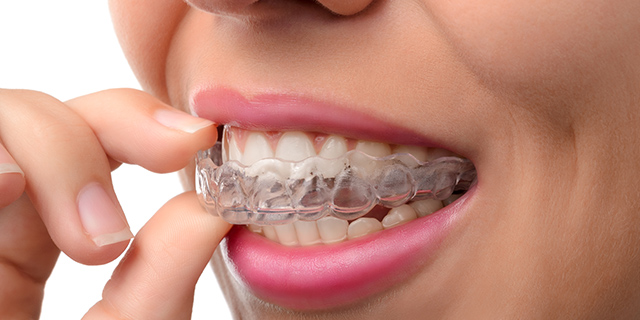
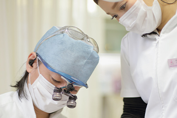
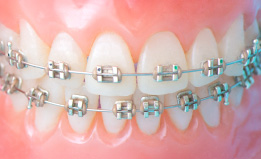
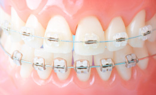
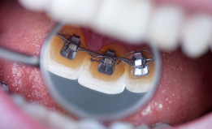

- Home
- 矯正歯科・マウスピース矯正
気になる歯並びを整えましょうOrtho

前歯のでこぼこの生え方が気になりませんか？ 歯並びが少し乱れている場合、マウスピースを使って矯正治療ができるかもしれません。兵庫県神戸市三宮の歯医者「北野坂鳥居歯科医院」にお気軽にご相談ください。大きく乱れている場合には、ワイヤーを使って矯正する方法にも対応します。そして、笑顔が映えるきれいな口元を手に入れてください。
矯正歯科（ワイヤー矯正とマウスピース矯正）
歯並びや噛み合わせを整えるための矯正装置には、さまざまな種類があります。それぞれに特徴がありますので、お口の状態や患者様のご要望に合わせて納得のいく矯正装置を選び、治療することが大切です。

矯正装置というと、歯の表面にワイヤーを装着するイメージが強いのではないでしょうか？ 金属製の装置を「金属ブラケット」といい、ほかにも歯の色に似ている素材でつくる「審美ブラケット」も選べます。また歯の裏側に装着する「リンガルブラケット」があり、取り外し可能なマウスピースを使った治療法もあります。
マウスピース矯正とワイヤー矯正の違い
※表は左右にスクロールして確認することができます。
| マウスピース矯正 | ワイヤー矯正 | |
|---|---|---|
| 見た目 | 薄く透明で目立たない | 金属のワイヤーやブラケットだと目立ちやすい |
| 取り外し | 取り外し可能 | 基本的に治療終了まで取り外さない |
| 治療中の食事 | 取り外せるので何でも食べられる | 硬い物やネバネバした物は挟まったり、装置が外れたりするので注意が必要 |
| ブラッシング | 取り外して歯のブラッシングができる | ワイヤーやブラケットを避けながら丁寧なブラッシングが必要 |
| 対応症例 | 制限がある | さまざまな症例に対応可能 |
マウスピース矯正
歯の状態に合わせてつくった少しずつ形の異なるマウスピースを一定期間ごとに取り替えて、歯を動かしていく矯正システムです。当院では、デジタル機器を用いてお口の中のデータを収集し治療計画を立てます。そして高い医療技術と豊富な経験をいかして治療します。
〜マウスピース型矯正装置の注意点〜
マウスピース型カスタムメイド矯正歯科装置の中には、完成物薬機法対象外の矯正歯科装置があり、医薬品副作用被害救済制度の対象外となる場合があります。その場合、「薬機法対象外」と記載します。実際に治療を行う前にもご説明しますのでご安心ください。
ワイヤー矯正の種類
※表は左右にスクロールして確認することができます。
金属ブラケット |
審美ブラケット |
リンガルブラケット |
|---|---|---|
|
 金属のブラケットに金属のワイヤーを通して歯を動かします。ほとんどの症例に対応します。 |
 金属ブラケットの替わりに、歯の色に似ている素材や色のブラケットを使用します。白いワイヤーと組み合わせるとあまり目立ちません。 |
 歯の裏側にブラケットを装着して歯を動かします。表から見えないので治療していることをほとんど気づかれません。 |
難易度別矯正治療
A：前歯部矯正
iGO（アイゴー）システムとは、インビザライン（マウスピース型カスタムメイド矯正歯科装置・薬機法対象外）のアライン社による軽度の歯並びの乱れに用いる治療システムです。例えば前歯のでこぼこだけを修正したい場合やブリッジ治療のために1～2本の歯並びを整えたい場合に用いられます。マウスピースを使ったシステムなので目立ちにくく、取り外しも可能です。
B：大臼歯矯正
インプラント世界シェア1位のストローマン社の子会社のクリアコレクト（マウスピース型カスタムメイド矯正歯科装置・薬機法対象外）を使って、大臼歯の間を矯正することができます。日本では、インビザライン（マウスピース型カスタムメイド矯正歯科装置・薬機法対象外）より後発なのでまだあまり普及していませんが、アメリカでのシェアは第2位です。
C：ワイヤー矯正による上顎拡大と下顎アップライト
アップライトとは、傾いている歯をまっすぐに整えることです。ワイヤーやゴム、スプリングなどを使用してアップライトします。
D：上顎拡大（比較的早く拡大する装置）
固定式の装置を使い上顎の横幅を比較的早く広げる治療法です。金属製のバンドと太いワイヤー、そして歯列の横幅（歯列弓）を押し広げるための調整可能な拡大ネジでできています。外から目立たないうえ、大きな力がかけられるのでマルチブラケット法よりも早く歯を移動できます。
料金表
| 初診料 | 保険適用 |
|---|---|
| 診断料 | 5,000円 |
| A：iGOシステム（マウスピース型カスタムメイド矯正歯科装置・薬機法対象外）による前歯部矯正 | 400,000円 |
| B：クリアコレクト（マウスピース型カスタムメイド矯正歯科装置・薬機法対象外）による大臼歯矯正 | 800,000円 |
| C：ワイヤー矯正による上顎拡大と下顎アップライト | 800,000円 |
| D：上顎拡大（比較的早く拡大する装置使用） | 800,000～1,000,000円 |
| 保定装置 | 0～10,000円 |
※表の価格はすべて税別価格です